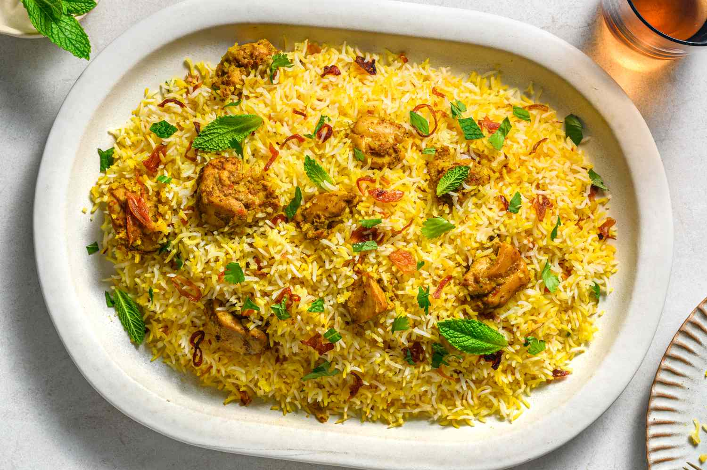

Ingredents
Chicken Biryani is a flavorful and aromatic dish that combines tender chicken with fragrant basmati rice, spices, and herbs. It is a popular dish in South Asian cuisine and is often served during special occasions and celebrations. The chicken is marinated in a mixture of yogurt and spices, then cooked with the rice to create a delicious one-pot meal.